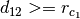
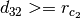
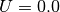
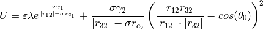

espressopp.interaction.StillingerWeberTripleTerm¶
This class provides methods to compute forces and energies of the Stillinger Weber Triple Term potential.
if  or 

else

-
espressopp.interaction.StillingerWeberTripleTerm(gamma, theta0, lmbd, epsilon, sigma, cutoff)¶ Parameters: - gamma (real) – (default: 0.0)
- theta0 (real) – (default: 0.0)
- lmbd (real) – (default: 0.0)
- epsilon (real) – (default: 1.0)
- sigma (real) – (default: 1.0)
- cutoff – (default: infinity)
-
espressopp.interaction.VerletListStillingerWeberTripleTerm(system, vl3)¶ Parameters: - system –
- vl3 –
-
espressopp.interaction.VerletListStillingerWeberTripleTerm.getPotential(type1, type2, type3)¶ Parameters: - type1 –
- type2 –
- type3 –
Return type:
-
espressopp.interaction.VerletListStillingerWeberTripleTerm.getVerletListTriple()¶ Return type: A Python list of lists.
-
espressopp.interaction.VerletListStillingerWeberTripleTerm.setPotential(type1, type2, type3, potential)¶ Parameters: - type1 –
- type2 –
- type3 –
- potential –
-
espressopp.interaction.FixedTripleListStillingerWeberTripleTerm(system, ftl, potential)¶ Parameters: - system –
- ftl –
- potential –
-
espressopp.interaction.FixedTripleListStillingerWeberTripleTerm.getFixedTripleList()¶ Return type: A Python list of lists.
-
espressopp.interaction.FixedTripleListStillingerWeberTripleTerm.setPotential(type1, type2, type3, potential)¶ Parameters: - type1 –
- type2 –
- type3 –
- potential –
-
class
espressopp.interaction.StillingerWeberTripleTerm.StillingerWeberTripleTerm¶ The StillingerWeberTripleTerm potential.